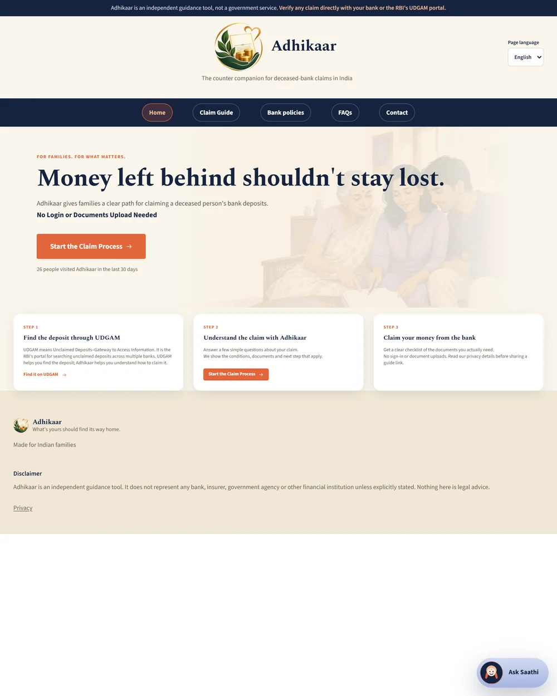
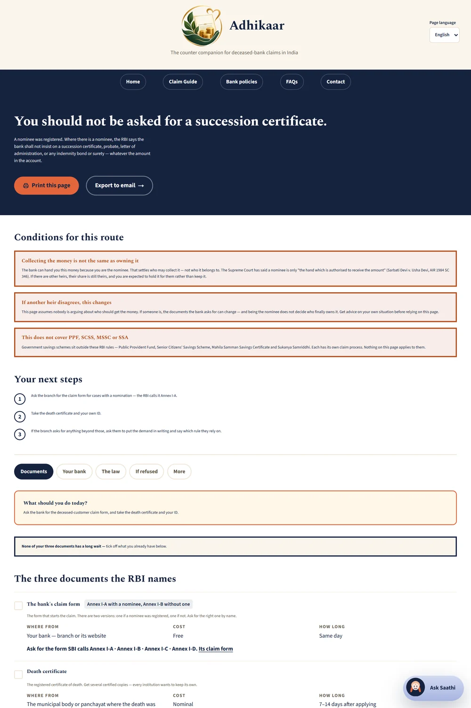

THE CURIOUS CHARVAKAS
Product Requirements Document
Adhikaar · Government and public sector case study
Prepared by Manyata Manocha
Contents
- The Chosen Problem — Case Summary
- Stakeholder Mapping
- The Current Claim Journey
- Secondary Research
- Existing Tools — and the Seam They Miss
- Primary Research
- Opportunity & Prioritization
- Product Strategy — User, Buyer, Problem Statement
- Solution Ideation & Direction
- Product Detailing & MVP Scope
- UX & Product Design
- Analytics & Event Tracking
- Build & Deployment
- Launch, Growth Loop & Iteration
1. The Chosen Problem — Case Summary
The brief set one constraint: a problem in the government or public sector, chosen narrow. The frame is that the state registers a death and propagates nothing. One thing happens automatically when someone dies in India — a death gets registered. Aadhaar, PAN, pension, bank accounts, EPF, insurance, shares and property are each a separate process at a separate authority, everyone started by a grieving family with no map.
This document takes one branch of that: the bank deposit.
What makes it live now. The RBI issued the Settlement of Claims in respect of Deceased Customers of Banks Directions, 2025 — RBI/2025-26/82, ref DoR.MCS.REC.50/01.01.003/2025-26, issued 26 September 2025, implemented not later than 31 March 2026. Since that date a bank usually may not demand a succession certificate for a deposit claim. That certificate is not paperwork; it is a civil suit under the Indian Succession Act, 1925, ss. 372–373.
|
₹4,00,000 account · no nominee · heirs in agreement |
Cost |
Time |
|
Succession certificate (the pre-2026 answer, still the default advice) |
₹17,000–37,000 |
5–7 months |
|
Simplified procedure (what the rule now prescribes) |
~₹1,000 |
4–6 weeks |
Roughly 3% of asset value in court fees plus a lawyer, and of those months a 45-day newspaper objection period is fixed by the process itself.
The evidence rule that governs this document. Every RBI paragraph quoted here is read from the notification itself, and every bank policy line from that bank's own published page. The cost and duration figures above cannot be sourced that way and are not claimed to be — no statute states what a court charges. They are estimates bound to the worked example. Where a bank field could not be read from a primary source it is blank here, and renders in the product as "we haven't verified this — ask your bank", never as a plausible guess.
Almost nobody knows the rule changed. Two independent deep-research passes on 3 September 2026 both returned the pre-2025 answer. A live 2026 Indian legal site still states movable assets are "legally claimable only through this document." ChatGPT gives the same answer. The people advising families have no incentive to update, because a succession certificate is billable and the simplified procedure is not.
A rule that would save a bereaved family ₹17,000 and five months exists, is in force, and is binding on every bank in India — and the family standing at the counter has no way to know it, no way to verify what the branch tells them, and nothing to hand across the counter that says otherwise.
The question this PRD answers, since the problem was chosen rather than handed over:
What should the FIRST version solve for one specific family, and how will we know it worked once it is live?
Adhikaar's answer. A front door that recognizes the reader's situation, up to eight questions where the law still needs to know more, a verdict at a real URL, and a printable page carrying the RBI's own sentence with its paragraph number beside that bank's own published policy. The user does not argue their opinion against the bank's. They show the bank its own rules.
The claim is deliberately narrow. Not "this money is yours" — that is succession law, and this product has no business answering it. The claim is: you are entitled to be told the correct rule before spending ₹17,000 on a court document.
Three tensions the case turns on:
A rule that exists versus a rule that arrives. The RBI has issued this instruction three times — 2005, January 2013, September 2025. A rule reissued three times in twenty years is not reaching the counter.
Published policy versus the counter. From 31 March 2026 every bank must publish its deceased-claim policy. SBI implemented three months early. Canara's own policy makes a third-party surety mandatory above ₹5 lakh — a third of the RBI's ₹15 lakh floor — and never mentions the 2025 Directions. The law is uniform; the practice is not.
A vacuum filled by whoever shows up. Where there is no free, authoritative answer, the people advising a grieving family are the ones with a financial interest in the answer.
In scope: bank deposit accounts and term deposits, claimed by an adult legal heir or registered nominee, where the family already knows the account exists.
Out of scope, and it is a long list on purpose: account discovery · insurance · mutual funds · shares · EPF · NPS · post office savings · property mutation · dispute resolution between heirs · any login · any stored claim data. Government savings schemes are excluded by the Directions themselves at para 6(b), and said so on every page. Every claim about bank deposits can be verified in the time available; seven asset rails cannot. Three factual errors were found in the bank material alone after two days on it. Every other rail gets one map page that points and never advises.
2. Stakeholder Mapping
§1 said the family has no way to verify what they are told. That only becomes fixable once every party who touches that verification is named.
There is no buyer. Decided, not defaulted. The claimant cannot be charged — they are bereaved, and charging a family to be told a rule the state already published is the precise behaviour this product exists to argue against. The bank will not pay for a tool built to constrain it. User = beneficiary, free, no login. §12 covers what that costs: no revenue means no revenue-based North Star, so the metric had to be adapted rather than borrowed.
|
Party |
Cares most about |
Where they help or block |
Role |
|
The claimant — adult legal heir or registered nominee |
Getting the money released without being sent to court, and not being made to feel stupid |
Arrives already holding a demand and already believing it. No way to verify what the branch said |
User |
|
The branch officer |
Not being the person who released money to the wrong claimant |
The actual gatekeeper. Reads the sheet, decides. Caution is rational — insider fraud on deceased accounts is documented |
Reader of the output |
|
The bank's head office |
Compliance, and a defensible written policy |
Publishes the policy that becomes the claimant's ammunition. Also where policy and counter diverge |
Source of evidence |
|
The RBI |
That the Directions are implemented |
Wrote the rule, set the deadline, runs the Ombudsman. No line of sight to any counter — which is why it has issued this three times |
Authority |
|
Lawyers and CAs |
Billable work |
The incumbent adviser and the source of the misinformation. A certificate is billable; the simplified procedure is not |
Existing alternative |
|
The other legal heirs |
Their own share |
Can convert a simplified claim into a disputed one, flipping the verdict entirely under para 11(b) |
Affected party |
|
Whoever the family asks next |
Being helpful |
The only distribution this product has. A family claims once, so the person they tell is the entire growth mechanism |
Propagation |
Roles deliberately not listed: no procurement, no IT or security review, no employer buyer, no vendor. Those exist in a B2B case and not in this one; listing them out of habit would be padding.
The influence every existing tool ignores: the branch officer as a reader. Every guide, article and chatbot answer on this subject is addressed to the claimant. Not one produces an artifact designed to be read by the person on the other side of the counter — the only person who can actually release the money.
That gap drives three decisions that would otherwise look arbitrary:
Quote and cite, never assert. "You are entitled" is the claimant's opinion, and an officer can decline an opinion. Para 9 quoted with its number, beside the bank's own PDF, is the bank's own position — and declining that requires a written reason.
Print is a first-class output, not a stylesheet afterthought. The deliverable is paper in someone's hand, and it must survive being printed black-on-white with every URL expanded.
Quoting the right paragraph is a safety rule, not a nicety. The "shall not insist on production of legal documents" sentence is para 9, covering nominee and survivorship claims only. On a no-nominee page it is a misquote a branch officer can catch, and the moment they catch it the claimant has lost their credibility at the worst moment of their life. The no-nominee case runs on para 10(a), which mandates settlement on a closed list of six documents — a stronger instrument than a prohibition.
One thing the map is honest about. The officer's caution is not irrational and the product does not treat it as villainy. Insider fraud on deceased accounts is real. Caution is not the problem; undocumented, unaccountable caution is — a demand made verbally, with no rule cited, that the family cannot check.
3. The Current Claim Journey — How Families Claim a Deceased Relative's Deposit Today
§2 named who is in the room. This section is what actually happens in that room — the real sequence a family goes through today, stage by stage, so the next sections can point to exactly where it breaks rather than describe the problem in general terms.
Six stages. Four are addressable by information alone, and this product addresses all four.
|
Stage |
What happens today |
Fixable by software? |
Failure |
|
0 |
Register the death — 21 days at the municipal body, certificate 7–14 days later, multiple certified copies because every authority wants its own |
❌ Physical process |
|
|
1 |
Find out what accounts exist — no register. Papers, passbooks, SMS alerts. UDGAM covers only deposits already dormant 10+ years |
❌ No register, no API |
|
|
2 |
Approach the bank — several banks now publish an online claim route, and SBI issues a claim reference number |
❌ In-person by design |
|
|
3 |
The branch tells you what documents you need |
✅ Pure information asymmetry |
FAILURE 1 |
|
4 |
You go and procure those documents |
✅ Where the money is lost |
FAILURE 2 |
|
5 |
You submit, and wait |
✅ No portal shows a deadline breach |
FAILURE 3 |
|
6 |
Repeat at EPFO, LIC, the depository, the pension office. Nothing carries over |
⚠️ Map page only — lists and points, never advises |
Stages 0, 1, 2 and 6 are not failures being ignored. They are not information problems. Registering a death is physical. Finding the accounts has nothing to query. Walking into a branch is in-person by design. Stage 6 is a different institution with a different form each time, which is why it gets a page that points and never advises rather than guidance this document cannot verify.
Failure 1 — the branch is the only source of truth, and it is not reliable
The family has no way to verify what they are told. Requirements vary by staff member, not merely by bank. Nothing is given in writing. And the published policy and the counter can disagree: PNB's own website states "No bond of surety from a third-party is to be insisted in case of claims up to the threshold limit" — while a documented account describes a PNB branch demanding a surety, two witnesses and a family genealogy on a ₹46,000 claim (§6).
Not claimed: that branch staff are broadly untrained. What is evidenced is the gap between a published policy and one counter.
The bank's own page is the answer to its own counter, and nobody carries it in with them. That sentence is the product.
Failure 2 — the certificate confusion, and this is where the money goes
Three documents, three issuers, and almost nobody knows which one they need.
|
Issued by |
Time |
Cost |
|
|
Legal Heir Certificate |
Tehsildar / revenue officer |
30–45 days typical |
₹20–200, varies by state |
|
Surviving Member Certificate |
Local authority |
2–4 weeks |
Nominal |
|
Succession Certificate |
Civil court |
5–7 months, including a fixed 45-day objection period |
~3% of asset value, plus a lawyer |
A plain search still returns, from 2026 legal sites, "a succession certificate is specifically required for bank claims." That is the pre-March-2026 answer, and it is what families act on.
Failure 3 — nobody knows the bank is on a clock
The 2025 Directions do not only simplify the documents. They impose obligations on the bank that no family is told about:
|
Obligation |
Where |
|
Settlement within 15 calendar days of receiving complete documents |
Para 31 |
|
Delay compensation at Bank Rate + 4% p.a. (9.5% today) |
Para 33 |
|
₹5,000 per day for delays on lockers and safe custody |
Para 33 |
|
Term deposits terminate early on death without penalty |
— |
|
Post-death credits returned to the remitter marked "Account holder deceased" |
Para 12 |
Several banks now publish an online claim portal, and SBI issues a reference number. But a portal tells you where your file sits in the bank's own process. No bank portal tells you the 15-day deadline has passed, or what para 33 provides when it has. A family being stonewalled holds a statutory entitlement to compensation and has effectively no chance of knowing it.
What the wrong path actually is — the severity behind Failure 2
A succession certificate is a civil suit under the Indian Succession Act, 1925, ss. 372–373. No RBI rule and no bank process sends anyone to court. A bank sends you there by demanding a document only a court can issue. The demand is the mechanism.
What s.373 sets in motion: notice to every other legal heir · a newspaper advertisement carrying a fixed 45-day wait · a hearing proving both the relationship and that the assets exist · and the court summoning whoever it needs, which can include bank officials.
Primary research confirms it from the inside. R2's family is two years in and unresolved. The court requires the branch manager of each branch where the deceased held an account to appear and testify the account exists. The managers frequently do not attend, and nothing compels them — no service standard, no deadline, no consequence. Each absence is another adjournment. That is how a 5–7 month process becomes two years.
The simplified procedure replaces a civil case with a form.
Court route: a petition, notice to every heir, a newspaper advertisement, hearings, and the deceased's own bank sending a person to a courtroom to confirm he banked there.
Para 10(a): the bank shall settle on six documents. No court, no notice period, no witnesses.
The one stage this version attacks
Stage 3 into Stage 4 — the moment a family accepts a demand they cannot check, and leaves to procure the wrong document.
Everything in V1 exists to move that moment. It is the only stage where the family has no option at all, it is where the ₹17,000 and the five months are committed, and it is the last point at which the decision is reversible — once the petition is filed, the newspaper clock starts and the money is spent.
There is no drop-off funnel here, and inventing one would be dishonest. This journey happens offline, across institutions that publish nothing about it. The "drop-off" is not a user abandoning a screen; it is a family complying with a demand that should never have been made — an event nobody counts, which is part of why the problem has survived twenty years and three RBI circulars.
Symptom versus root cause
|
Symptom |
Root cause |
|
"Banks are slow" · "the process is a nightmare" |
The branch is the only source of truth, and its demand is unverifiable. A wrong demand and a right one look identical to the family receiving it |
|
"People don't know their rights" |
Knowing the right changes nothing on its own. The family already cannot argue with the counter — what they lack is not knowledge but an artifact the officer has to answer to (§2) |
|
"The rules need to change" |
The rule already changed, on 31 March 2026. It has now been issued three times in twenty years (§4). Another circular is not the missing piece |
A faster portal or a better circular treats the symptom. The root cause is that the bank's own published rule is not in the room when the demand is made — and that is a distribution problem, which is the one thing a website can actually fix.
4. Secondary Research
§3 named the root cause in a single family's own case. This section is the outside evidence that the same root cause holds at scale — how big the problem is, why the rule keeps failing to arrive, and where bank practice itself diverges from the law. Grouped by what each fact decides. Anything that changed no decision has been cut, and the numbers this research got wrong are listed at the end rather than quietly dropped.
The pool — how much money is sitting unclaimed
|
Figure |
Source |
|
₹98,073 crore of unclaimed deposits with the RBI as of 31 January 2026 |
Rajya Sabha Unstarred Question No. 2628, 11 August 2026 |
|
₹90,545 crore as of 30 June 2025 |
Same answer |
|
₹17,415 crore reimbursed from the DEA Fund for amounts paid to rightful claimants |
Same answer |
So what: ₹17,415 crore has flowed back to claimants against a stock of ₹98,073 crore. Most of it is still sitting there. This sizes the category, not the wedge; §7 sizes the wedge separately rather than borrowing this number.
A number this research retracted. An earlier draft claimed deposits were accumulating "four times faster" than they were paid out. That subtracted two totals whose dates were not comparable. Recomputed on a properly dated pair it is about 1.4×, not 4× — and the multiplier is used nowhere in this document. One clean sourced figure, nothing derived from it.
Why the rule has not reached the counter
The RBI has issued this instruction three times: 2005, January 2013, and September 2025.
So what: this is the single most important fact in the document. A rule reissued three times in twenty years did not fail to exist — it failed to arrive. That rules out "wait for regulation" as a solution, because regulation has been tried three times. The missing layer is distribution, not policy.
The public information layer is actively wrong
A plain search for what an heir needs still returns, from 2026 Indian legal sites, "a succession certificate is specifically required for bank claims." Two independent deep-research passes on 3 September 2026 both returned the pre-2025 answer, and ChatGPT gives the same.
So what: the family's most likely research paths all lead to the wrong answer, confidently. This is demonstrable live in ten seconds, which makes it the product's cleanest demo — and it explains the persistence: the information layer is not neutral, it is stale in the direction that costs money.
Implementation is uneven, bank by bank — and this is verifiable
Every bank must publish a board-approved deceased-claim policy. Read directly from those documents:
|
Bank |
What its own policy says |
Gap vs the RBI |
|
SBI |
Simplified procedure without surety up to ₹15 lakh. Revised 16 December 2025 |
Implemented 3 months early |
|
PNB |
"No bond of surety from a third-party is to be insisted in case of claims up to the threshold limit" |
Matches |
|
HDFC |
Fast-track document list matches the RBI's six. But states 1 month for a no-nominee claim |
RBI para 31 says 15 days, and does not distinguish nominee from no-nominee |
|
ICICI |
Surety only above ₹2 crore |
13× above the ₹15 lakh floor — permitted under para 7(h) |
|
Axis |
Policy PDF dated October 2023; third-party surety once a no-nomination claim exceeds ₹10,000 |
Predates the Directions and never mentions them |
|
Canara |
Indemnity-cum-surety mandatory above ₹5 lakh; policy is Version 4.00 for FY2025-26 |
A third of the RBI's ₹15 lakh no-surety floor, and the Directions are not mentioned anywhere in 15 pages |
So what — and this is the finding the product's central feature depends on. The law is uniform. The practice is not. The answer genuinely depends on which bank you walk into, which converts the bank-by-bank table from a reference feature into the argument for the product's existence (§7, §10). It also means a generic "the RBI says you don't need a succession certificate" page would be insufficient, not merely unhelpful — a Canara customer needs to know their own bank's policy contradicts the floor.
A second-order finding: from 31 March 2026, publishing that policy is mandatory. ICICI's board-approved policy could not be located at all — only individual claim forms. A missing document is itself a documented gap, which is why the product's bank table carries a "policy published" column.
The escalation route exists, and is weaker than it sounds
The current scheme is RB-IOS 2026 (cms.rbi.org.in), free to use.
In FY2024-25, 40.78% of maintainable complaints were dismissed as showing no deficiency.
Deposit-account complaints ran to 49,913, 16.84% of the total. Deceased-account claims are not reported as their own category.
So what: the product names the route and refuses to oversell it. It also explains why the escalation page leads with a written complaint to the branch's Grievance Redressal Officer and a 30-day clock, rather than sending people straight to the Ombudsman. And the missing category is a measurement gap in the regulator's own reporting — nobody, including the RBI, knows how often this specific failure happens.
Adjacent facts that shape scope
Death registration: within 21 days at the municipal body or panchayat; the certificate issues 7–14 days after application. Late registration after one year needs a court order.
UDGAM (RBI): covers 30 banks and roughly 8.6 lakh registered users (July 2025). It is search only — it locates a dormant deposit and does not move money, and it requires its own registration with OTP and captcha.
So what: UDGAM defines the boundary. Discovery has a government answer; execution does not. Adhikaar starts where UDGAM stops, and says so on the homepage rather than competing with it.
Statistics this research found to be wrong
Listed because the discipline is the point, and because each of these felt strong enough to have shipped.
|
Claim that did not survive |
What was wrong |
|
"0.02% of unclaimed deposits are recovered" |
Unsourceable, and roughly 75× off. ₹1,071 crore was settled in the 25 Sep–31 Oct 2025 window alone |
|
"Unclaimed deposits accumulate 4× faster than payouts" |
Endpoints a year apart, not five months. Recomputes to ~1.4× |
|
"EPF has ₹16,600 crore unclaimed" |
Two institutions added together and mislabelled — EPFO ₹9,330 cr plus LIC ₹7,318 cr |
|
"Unclaimed EPF" as a category |
The government told Parliament EPFO maintains no "unclaimed" accounts — only "inoperative" |
|
Three different unclaimed-insurance totals |
Three incompatible definitions. Not cited anywhere in this document |
|
"Shall not insist on a Succession Certificate" applied to no-nominee claims |
That sentence is para 9 — nominee and survivorship only. No-nominee runs on para 10(a) |
The pattern in all six is the same: a derived or aggregated number that felt strong. Every figure that survived into this document is a single sourced value, used as published, with nothing computed from it.
5. Existing Tools — and the Seam They Miss
§4 established that the problem is real and large. The obvious next question is why nobody has already solved it — this section checks every tool that already exists against the same job a family actually needs done, rather than assuming a gap because no direct competitor was found. Organised by the job being done, not by brand. A family does not choose between "UDGAM and a lawyer" — it hits five different jobs in sequence, and different things serve each one.
|
Job to be done |
What exists today |
Where it stops |
|
Find the account |
UDGAM (RBI), unclaimedassetsportal.in, the Common Landing Portal |
Genuinely solved, within limits. Search only — it locates a deposit and never moves money. Not this product's job |
|
Tell me what the rule is |
The RBI Directions themselves; each bank's board-approved policy PDF |
The rule is public and correct — and unreadable. It is a regulatory instrument addressed to banks, not a document written for a grieving family. The bank policies are scattered across eight different websites, some stale (Axis: 2023), one missing (ICICI) |
|
Tell me what to do |
Legal-advice sites, blogs, WhatsApp forwards, ChatGPT |
Confidently wrong. All return the pre-2026 answer (§4). This is the most-used route and the most damaging |
|
Lodge the claim |
Bank portals — SBI's CRCF, PNB, Union, BoI, Indian Bank, Central Bank |
Tells you where your file sits inside the bank's own process. Never tells you whether the demand made of you was legitimate, or that the 15-day clock has expired |
|
Do it for me |
Kustodian.life (~1,200 families, ₹20 crore recovered); Share Samadhan (shares only); Yellow (estate planning, pre-death) |
Real, and paid, and done-for-you. Cannot lead with "you don't need the certificate you are about to pay for" |
|
Represent me |
Lawyers and CAs |
The actual incumbent, and the source of the misinformation. A succession certificate is billable; the simplified procedure is not. No incentive to update |
|
Escalate |
RBI Ombudsman, RB-IOS 2026 |
Free and real. 40.78% of accepted complaints dismissed (§4). Deceased claims not even reported as a category |
The job none of them finishes
Make the bank's own rule portable to the counter.
Everything above either tells the family something (and is often wrong), or does the work for them (and charges for it). Nothing hands a family an artifact that the officer across the counter has to answer to — the rule, correctly attributed, beside that bank's own published words, in a form that survives being printed.
Why this gap survives even though everyone has a chatbot
A chatbot will answer instantly. What it cannot do is be accountable for the paragraph number. It has no obligation to quote verbatim, no mechanism to refuse to answer when the honest answer is "your heirs are in dispute, take advice," and — decisively — it produces a conversation, not a document. A ChatGPT conversation is not something a branch officer has to accept or put a written refusal against. A page quoting para 9 with a link to the bank's own PDF is.
And the RBI's misquote trap makes this concrete: the "shall not insist" sentence belongs to para 9, nominee cases only. A generative tool asked about a no-nominee claim will reproduce that sentence, because every secondary source it learned from does. A misquote a branch officer can catch is worse than no answer at all — it destroys the family's credibility at the exact moment it matters (§2).
Why nobody has built it
Nobody is competing for the free public information layer, because there is no money in it. The family cannot be charged; the bank will not pay to be constrained; and the one commercial player cannot lead with the message that saves the most money, because its revenue depends on doing the work rather than removing the need for it.
Stated plainly rather than as a weakness: the absence of a competitor here is a finding about incentives, not a gap in the market waiting to be monetised. It is also why this belongs in a public-sector case study.
6. Primary Research
Everything above is secondary evidence. This is the first primary evidence: real conversations with the people this product is for.
How it was done
Seven semi-structured interviews across six segments, conducted by me. Five product interviews, each beginning with the same cold scenario — "₹4 lakh in an SBI account, no nominee: what would you do?" — answered before the participant saw anything, then worked through Adhikaar. The order matters: the belief is captured before the product can influence it. Two experience interviews with people who had dealt with a family member's estate, asked what happened rather than what they would do.
Alongside these sit three public forum accounts, coded and dated. These are not interviews, are anonymous and unverifiable, and all pre-date the 2025 Directions — so they evidence the problem the Directions were written to solve, never current bank behaviour. Participants are described by role and segment only.
|
# |
Role and segment |
Why in scope |
|
1 |
Salaried professional, urban — handles family paperwork, never a deceased claim |
The most likely real user: capable, motivated, wrong about the rule |
|
2 |
Homemaker, urban — smartphone-comfortable, not with legal documents |
The low-jargon-tolerance case |
|
3 |
Working professional, digitally confident — knows UDGAM |
Tests whether the gap survives digital confidence |
|
4 |
Banking/finance professional |
The deliberate contrast case |
|
5 |
Small-business owner — prefers speaking to a person |
Tests whether a website changes a branch-first user's behaviour |
|
R1 |
Father died 2020 |
The control case. The claim went smoothly (insurance, a different rail) |
|
R2 |
Grandfather died 2024, still unresolved in 2026 |
The spine. Two years in, in district court, no heir dispute |
What came out of it
Labelled by how far the evidence travels: SAW — said in their own words · THINK — my interpretation · ASSUME — a hypothesis with no evidence behind it.
|
# |
Finding |
Evidence |
Confidence |
|
1 |
The default belief is the wrong one, and it is specific. "No nominee" is read as "court" |
P1, cold: "maybe a succession certificate because there is no nominee." After: "I thought no nominee automatically meant we would have to go to court." |
SAW — High. The exact belief the product exists to correct |
|
2 |
Nobody reads the primary source, including people who could |
P1: "websites usually have a lot of PDFs, so I would probably end up calling someone or asking a lawyer." P2: "I wouldn't read RBI circulars myself." |
SAW — High |
|
3 |
Trust is conditional on visible sourcing — volunteered, not asked |
P1: "If you are telling me something different from what I believed, I need to see where it is coming from." P3: "I wouldn't trust a random AI answer. If it shows the RBI rule... then yes." |
SAW — High. The strongest validation of quote-and-cite |
|
4 |
Discovery and claim are two different jobs |
P3: "UDGAM helps me find the deposit. Adhikaar tells me how to proceed... two different problems." |
SAW — High |
|
5 |
Plain wording beats correct terminology |
P2: "saying someone named in the bank records is easier for me than just saying nominee." |
SAW — Medium-High |
|
6 |
The action outranks the information |
P2: "I mainly want someone to tell me: okay, now collect these things and go here." |
SAW — High. Earned the "what to do today" box |
|
7 |
The absence of a login was named as a positive, unprompted |
P2: "I liked that I didn't have to upload documents or create an account before getting an answer." |
SAW — Medium |
|
8 |
The product prepares for the counter; it does not replace it |
P5: "I would still go to the branch. But maybe I would check this before going." P1: "instead of completely depending on whoever is sitting at the counter." |
SAW — High. Reframed the positioning |
|
9 |
Domain-aware users get materially less, and said so |
P4: "Not much, because I already understand the basic process." |
SAW — High. The contrast case behaved as one |
|
10 |
Over-trust is the product's own risk |
P4: "I would be careful with users treating the output as a legal determination. Family disputes, wills and court orders can change the situation quickly." |
SAW — High. Maps onto para 11(b) |
|
11 |
Staleness is the trust risk for anyone returning |
P5: "I would worry whether the information is updated." |
SAW — Medium |
|
12 |
The paper artifact is wanted, for an unprompted reason |
P2: "when someone is dealing with a death in the family, remembering all these things is difficult." |
SAW — Medium-High. A memory aid, not a convenience |
|
13 |
There is no standard process and no list anywhere |
R2: "There is no standard process." "No website that can give them a list." |
SAW — High. The product's reason to exist, in a user's words |
|
14 |
Information disclosed before death determines the outcome |
R1's claim went smoothly because the father had given the family the details in advance |
SAW — Medium. Kept because removing it would select for the story |
What this research does not prove
None of the five product interviews was with a bereaved person. They answered a scenario. The real user is grieving and doing this for the first time, and grief is the one condition never tested.
The belief flip is documented once, not measured as a rate. One observation, not a percentage.
Nobody in this set had been refused at a counter. R2 is a court case; the counter-refusal evidence comes from public accounts.
The bank's operational side is unheard. P4 understands policy — not branch-counter staff who decide in the moment. That is the most likely source of a finding that would complicate this document: if delays are mostly internal processing rather than families bringing wrong documents, correct information fixes which document and not how long it sits.
The sample is urban, digitally able and English-speaking, and nobody tested the Hindi or Kannada versions, which are shipped and unreviewed by a native speaker.
I conducted every interview myself, on a product I built. No blind, and social desirability runs one way. The two neutral readings are useful precisely because they cut against it.
What it changed
Finding 8 reframed the positioning, and it is the largest change this research made. The product was conceived as the thing that tells a family the bank is wrong. Two participants independently described something narrower:
Prepare me before I reach the counter, so I do not arrive completely unaware.
A smaller claim and a more defensible one. It does not require the family to win an argument or the branch to be wrong.
Finding 10 became an edge case rather than a footnote — the real failure mode is a reader treating a verdict as a legal determination, which is why disputes, wills and court orders exit to review. Findings 3 and 6 pull in opposite directions and the product serves both by ordering: the verdict and next action come first and never require scrolling, with the RBI's own sentences directly beneath.
Seven people confirm the problem. No interview can confirm the fix works, because the only proof is a family that walked into a bank with this page and was not sent to court. That is §14's business, and this section does not lend it confidence it has not earned.
7. Opportunity & Prioritization
Everything §3 to §6 surfaced, written as FOR whom / THROUGH what / BECAUSE the seam is still un-owned. The BECAUSE clause is the test: with no explanation for why the gap survives, it is not an opportunity.
|
ID |
Opportunity |
Value |
Effort |
Carry forward? |
|
O-1 |
Say which rule applies to this specific claim — THROUGH a deterministic question flow ending in a cited verdict, BECAUSE the rule is public, correct and unreadable, and every accessible source returns the pre-2026 answer (§4, §6 #2) |
L |
M |
Yes — the thesis |
|
O-2 |
Make that verdict portable to the counter — THROUGH a printable page carrying the RBI's sentence beside the bank's own policy, BECAUSE no existing tool produces an artifact addressed to the officer (§2, §5) |
L |
S |
Yes — a property of O-1, not a separate build |
|
O-3 |
Check what the branch demanded against what the RBI prescribes — THROUGH a set difference with paragraph references, BECAUSE nothing is given in writing and the family has no baseline (§3 F1) |
L |
S |
Yes |
|
O-4 |
Compile the bank-by-bank published position — THROUGH an aggregated table with per-row verification dates, BECAUSE banks have had to publish since 31 March 2026 and nobody has collected them (§4) |
M-L |
M |
Yes — §4 moved this from nice-to-have to essential |
|
O-5 |
Name what documents to get, what each costs, and which to start today — THROUGH per-document authority, cost, time and a link, BECAUSE the branch hands over a list and explains nothing (§3 F1, §6 #5) |
M-L |
M |
Yes |
|
O-6 |
Surface the 15-day clock and its compensation — THROUGH a deadline tracker and a written escalation route, BECAUSE no bank portal reports a deadline breach (§3 F3) |
M |
S |
Yes, secondary |
|
O-7 |
Find the accounts — THROUGH a unified search across institutions |
L |
XL |
No. UDGAM covers discovery, and every authenticated rail needs consent from the account holder, who is dead |
|
O-8 |
Do the claim for them — THROUGH a paid done-for-you service |
L |
XL |
No. A service business — and it cannot lead with "you do not need the certificate you are about to pay for" |
|
O-9 |
Cover the other rails — EPF, insurance, shares, pension |
L |
L |
No. Bank-deposit claims can be verified in the time available; seven rails cannot |
|
O-10 |
Prompt nomination before the death — THROUGH pre-death planning, BECAUSE R1 shows advance disclosure determines the outcome (§6 #14) |
M |
S |
No for V1. Different user, different moment. Helps nobody currently holding a demand |
How the scores were reached. Value = pain removed × how hard it is to copy. O-1 to O-3 score L because they attack the one stage where the family has no option at all, and because correct paragraph attribution is something incumbent advisers have no incentive to produce and generative tools reliably get wrong. Effort = build cost in a nine-day sprint: O-2 and O-3 are S because neither needs logic. Ties break toward the smaller build, which is why O-2 ships as a property of O-1 — every verdict page is the printable artifact.
8. Product Strategy — User, Buyer, Problem Statement
This is the lock point. Everything after this section is detailing, not a change of direction.
User and buyer
User = the claimant. There is no buyer. The reasoning is in §2 and is not repeated here. The consequences are: the product is free, there is no login, nothing about a family is stored, and §12 cannot use a revenue-linked North Star and says so rather than inventing one.
Persona — the proxy
An adult legal heir or registered nominee in India, handling a deceased parent's or grandparent's paperwork. Frequently the family's designated proxy: the adult child who is best with forms, often acting for a surviving parent, often remotely, almost always on a phone.
They have already had the counter conversation. Discovery is done. They arrive holding a demand, usually for a succession certificate.
They are recently bereaved, doing admin they have never done before, in a state where reading is hard and being condescended to is intolerable.
They are not a lawyer and have no intention of becoming one. They need to know whether what they were told is correct, and what to do on Monday morning.
They are not inexperienced. P1 has handled family banking paperwork for years and still assumed "no nominee" meant court. The gap is not capability; the correct answer is not reachable.
What "sorted" looks like to them: walking into the branch knowing what the rule says, what to ask for by name, and what to hand over — instead of finding out one demand at a time.
How the problem statement narrowed
The starting frame, written before the research: the state registers a death and propagates nothing. Four narrowings, each traceable to a finding.
|
What changed |
What forced it |
|
"Everything that follows a death" → one rail: bank deposits |
Verifiability, not ambition. Three factual errors surfaced in the bank material after two days on it (§7 O-9) |
|
"Bank deposits" → the claim, not the discovery |
UDGAM covers discovery, and no unified search is possible because every rail needs consent from a dead person. P3: "those are two different problems" (§6 #4) |
|
"Help families claim" → tell them which rule applies before they buy the wrong document |
§3 locates the failure at stage 3 → 4 — where the ₹17,000 is committed and the last point it is reversible |
|
"Tell them the bank is wrong" → prepare them before they reach the counter |
§6 #8. Two participants independently described something narrower than the product had claimed for itself |
What survived is the observation that the state records and does not execute. What changed is which single execution failure gets fixed.
The locked problem statement
For an adult legal heir or registered nominee or any related person in India who has a deceased relative's deposit in banks, the hold-up is that they cannot tell whether what they were asked for is what the rule actually requires because the branch is the only source of truth available to them, nothing it says is given in writing, and the sources that would settle it are either unreadable or wrong — which matters because the default wrong answer is a succession certificate, costing roughly ₹17,000–37,000 and five to seven months on a ₹4 lakh claim, and once the petition is filed the decision is no longer reversible.
Every clause is earned. The hold-up is P1's cold answer and R2's "no website that can give them a list" (§6 #1, #13). The "nothing in writing" clause is §3 Failure 1. The cost and duration carry §1's evidence-tier caveat. The irreversibility is §3's account of what s.373 sets in motion.
The core bet, stated so it can be proven wrong
If a family is handed the RBI's own sentence with its paragraph number, beside their own bank's published policy, in a form they can carry to a counter, then they will not buy a document they do not need — because the officer must either comply or put a refusal in writing that contradicts their own head office.
The core bet only holds if four smaller beliefs underneath it are true. Each is numbered (H1–H4, "H" for hypothesis) so it can be pointed at individually. Four sub-bets, and what would kill each:
|
Belief |
Confirmed by |
Killed by |
|
|
H1 |
A cited page can outweigh what the counter said |
A user arrives believing a succession certificate is required and leaves knowing it is not |
Users say the bank's word settles it regardless of any source |
|
H2 |
The evidence does the work, not the verdict |
Users name visible sourcing as their condition for trusting an answer that contradicts them |
Users skip the citations and want only the checklist — in which case the product is a to-do list, not an argument |
|
H3 |
The artifact actually reaches the counter |
Print and emailed-PDF export use, and users reporting they carried it |
Nobody prints, emails or carries it, and the page is read once and closed |
|
H4 |
It changes the outcome at the counter |
A family reports the bank settled on the simplified route |
Branches ignore the page regardless of what it cites |
Where each stands today, honestly. H1 is supported by one observed belief flip (§6 #1) — one observation, not a rate. H2 is supported by two participants who volunteered sourcing as their trust condition (§6 #3), which is the strongest interview evidence in the document. H3 has intent only — P2 said she would take it to the bank; nobody has been observed doing it. H4 is untested and cannot be tested by this product, because Adhikaar has no account, no claim record, and no way to observe what happens after the tab closes (§12). §14 reports what the pilot actually measured.
The success metric this is ultimately judged on
A family completes the claim without buying a succession certificate they did not need.
That is the true outcome, and the product cannot observe it — by design, since observing it would require the stored identity this product promises never to create. The observable proxy is the belief correction: arrived believing the certificate was required, left knowing it was not. §12 builds the metric stack on that limitation instead of pretending it away.
Locked scope
In: bank deposit accounts and term deposits · lockers and safe custody · claimed by an adult legal heir or a registered nominee · discovery assumed done.
Out: account discovery · insurance · mutual funds · shares · EPF · NPS · post office savings · property mutation · dispute resolution between heirs · login · any stored claim data · document generation beyond the printable sheet. Government savings schemes (PPF, SCSS, MSSC, SSA) are excluded by para 6(b) and stated as excluded on every page.
"No stored user data" narrowed to "no stored claim data," 9 September 2026, because two shipped changes made the broader phrasing inaccurate. Emailing a verdict now takes an address, and counting distinct people now takes a persistent browser id. Neither stores a claim, and both are stated precisely in §10 and §12 rather than argued away. The scope line is corrected to what the build actually guarantees: no claim answer set is ever written to a server, and no identifier is ever joined to one.
Locked 3 September 2026 — name, scope, flow and safety rules. The positioning refinement in §6 #8 (prepare, do not replace) is a sharpening of the same claim, not a pivot: nothing in the build changed because of it, only what the product says it is for.
The decision spine
|
# |
Decision |
What forced it |
What would reverse it |
|
1 |
One rail — bank deposits only |
Verifiability. Three errors found in the bank material alone in two days |
Nothing this sprint |
|
2 |
The claim, not the discovery |
UDGAM exists; no APIs exist; users draw the same boundary (§6 #4) |
A consented data rail for deceased accounts |
|
3 |
User = beneficiary, no buyer, free, no login |
Nobody can be charged, and the bank will not pay to be constrained (§2) |
An institution offers to fund it |
|
4 |
Quote and cite, never assert |
An opinion can be declined at no cost; a cited rule cannot. Two participants named sourcing as their trust condition (§6 #3) |
Users report the citations get in the way (H2 falsified) |
|
5 |
A registered nominee skips the amount questions |
Para 9 resolves nominee and survivorship at any amount |
Nothing — this is the structure of the law |
|
6 |
Bank asked second, not after the verdict |
Only then can the reader's own bank's policy show beside every later question |
A bank's policy is found to change a verdict rather than its evidence |
|
7 |
Print is a first-class output |
The deliverable is paper in a hand at a counter (§2) |
Print and email usage stay at zero across a real cohort |
|
8 |
A null renders as "not verified", never a guess |
A wrong bank row sends someone to a branch with a false document |
Nothing. This is the honesty rule the product rests on |
|
9 |
No login, and no claim answer set written to a server |
The answers are the family's private circumstances (§6 #7) |
Nothing in this scope |
|
10 |
Disputes, wills and court orders exit to review, and out-of-scope exits before any verdict |
Para 11(b) overrides everything, and the one domain expert named over-trust as the real risk (§6 #10). A pension claimant reaching a bank verdict is the clearest harm path |
Nothing — these are safety rules |
|
11 |
The metric is belief correction, not money recovered |
Nothing settles inside a pilot window, and the product cannot observe an outcome it deliberately does not store |
A follow-up research channel exists |
|
12 |
Retention declared inapplicable, not faked |
A family claims once. Optimising for return visits to a bereavement product would be harmful |
Nothing |
9. Solution Ideation & Direction
Three genuinely different shapes, not one idea written three ways.
|
Direction |
User value |
Effort |
Risk |
Verdict |
|
|
A |
An AI assistant. Describe your situation; it explains what applies |
Immediate, familiar, handles messy input |
S |
It cannot be accountable for a paragraph number. Asked about a no-nominee claim it reproduces the para 9 sentence, because every secondary source it learned from does — the one misquote a branch officer can catch |
Rejected |
|
B |
A content site. Articles explaining the Directions, the lists and the thresholds |
Fills the knowledge gap; cheap; ranks in search |
S |
The internet is already full of guidance and it is wrong (§4). Content cannot tell a family which rule applies to their claim, and produces nothing to carry |
Rejected |
|
C |
A deterministic question flow ending in a cited, printable verdict. Up to eight questions, one answer, the RBI's own sentence and the bank's own policy on a page built to be printed |
Answers this family's case, and hands them an artifact the officer must respond to |
M |
Will people trust a machine answer about money? Can a handful of questions cover the law without over-simplifying? |
Chosen |
Decided on a fourth axis the other cases do not need: can it be wrong safely? A wrong answer here is a grieving family at a counter with a false document, or a family abandoning a valid claim. A fails outright — a generative answer cannot be verified before it is shown, and its failure mode is a confident misquote. B fails softly: an article cannot be wrong about your case because it never addresses it, which is also why it does not help. C can be audited end to end: every branch follows only from the answers given, every citation is a record in one file with a verbatim flag, and an unverified bank field renders as "we haven't verified this".
C is also the only direction that produces a document rather than an answer, and the only one that can refuse. Where the honest answer is "your heirs are in dispute — get advice", C says so, because that is a branch in the logic rather than a reluctance to answer. A chatbot has no reason to withhold and no correct answer to withhold.
The rejected direction, returned in a bounded form. Direction A lost as the spine and came back as a layer. Saathi is a floating assistant grounded entirely in the product's own FAQ, so it can only answer from content this document controls and only link to pages the app owns. It cannot invent a citation because it is never asked to produce one. A generative model is not trusted with the legal answer, and is trusted with helping someone find their way to it.
End-to-end user flow
LANDING ── what Google says vs what the rule says
▼
SITUATIONS FRONT DOOR — three real choices, one smaller link
├─ I'm starting a claim ───────────────► the wizard, from question 1
├─ I've already started ──────────────► a 5-way stage menu:
│ not submitted yet → the wizard
│ waiting for the bank → /start/waiting
│ a bank demand → /what-were-you-asked-for
│ refused / delayed → /bank-refused
│ already in court → /already-in-court
├─ I don't know where the money is ───► /start/find/where — official search tools
└─ (small link) Need other help? ─────► /contact
▼
Q1 What are you claiming? ── the scope gate
├─ Something else / not sure ───────────► /out-of-scope
▼
Q2 Which bank? ── asked early so the bank's own policy shows
▼ beside every later question
Q3 Was someone named in the bank records?
├─ I don't know ────────────────────────► /unknown-nominee
▼
Q4 Is there a court order stopping payment? ── asked on every path
├─ Yes / unsure ────────────────────────► review
▼
Q5 Do all heirs entitled to inherit agree? ── asked on EVERY path
├─ Dispute, with a nominee ─────────────► review (para 9 may still pay the nominee, in trust — Sarbati Devi)
├─ Dispute, no nominee ─────────────────► /dispute (para 11(b) overrides)
▼
├─ Nominee ─────────────────────────────► /nominee para 9 · any amount
├─ Joint holder survives ───────────────► /survivorship para 9 · any amount
└─ No nominee
▼
Q6 Was there a will? → Q7 What kind of bank? → Q8 Total at that bank?
▼
/no-nominee/under-threshold (para 10(a) · six documents · no surety)
/no-nominee/over-threshold (a certificate may genuinely be required)
VERDICT PAGE — top section, then five tabs:
the answer + Print/email → the bank's own gap → hard caveats → steps
then: Documents | Your bank | The law | If refused | More
printing forces every tab open, so the paper sheet is never partial
▼
"The bank refused anyway" ──► GRO letter · 30-day clock · RB-IOS 2026
Three ordering decisions carry real weight, and all three come from the law rather than layout preference.
The heirs question is asked on every path, before the questions can end early. It moved ahead of the nominee shortcut on 7 Sep 2026, closing a real gap: before the change, a registered nominee whose family was contesting the money reached "you should not be asked for a succession certificate" without ever being asked whether anyone was contesting it. Para 11(b) overrides para 9 exactly there.
The bank is chosen second, not after the verdict. This reverses an earlier decision. Asking early is the only way to show the reader's own bank's published policy beside every question that follows, including the warning shown when a bank asks for more than the RBI requires. It never changes which verdict is reached.
The court question is asked on every path, and used not to be. A reader who had not been to a bank skipped it, and the verdict page carried the assumption forward as a caveat instead. That box explained the product's own routing rather than helping the reader. One more screen removes a caveat from every verdict behind that door.
Today versus tomorrow
|
Today |
With Adhikaar |
|
The branch names documents; nothing is in writing and there is no way to check |
The rule that applies is on a page with its paragraph number, beside the bank's own published words |
|
"No nominee" is heard as "go to court" |
Para 9 or para 10(a) is named, and the certificate question is answered before any money is spent |
|
A list of documents with no explanation of what they are or where to get them |
Each document with its issuing authority, real cost, real time, and which to start today |
|
A demand for a surety or a family genealogy is accepted, because who would know |
"What were you asked for?" splits the demand into prescribed and not prescribed, each with its paragraph reference |
|
Nobody knows the bank is on a 15-day clock |
The clock, the compensation rate, and a written escalation route with an honest note on its odds |
|
The family argues its opinion against the bank's |
The family shows the bank its own rules |
10. Product Detailing & MVP Scope
What was actually built, checked against the repository and — where it depends on production — the live URL.
Features — each tied to a flow step
|
Feature |
Traces to |
Status |
|
Wizard — up to 8 questions, heirs asked on every path, nominee and joint-holder answers ending the questions early |
Flow Q1–Q8 |
Shipped |
|
8 verdict routes, each a real linkable URL |
O-1 |
Shipped |
|
Situations front door — three real situations plus a catch-all link |
§9 |
Shipped. The 7-card picker it replaced is deleted, not just unreachable |
|
Verdict page: top section plus five tabs (Documents · Your bank · The law · If refused · More) |
O-2 |
Shipped. Answer, bank gap, hard caveats and steps stay above; the rest moves into tabs that printing forces open |
|
Readiness engine — per-document authority, cost, time, link |
O-5 |
Shipped |
|
"What were you asked for?" — the demand against the prescribed list |
O-3 |
Shipped |
|
Bank table — each bank's threshold, surety position, forms, verification date |
O-4 |
Shipped, 8 banks, up from the 4 scoped. Flags a row stale past 182 days. Every bank records no documented conflict, including PNB, where interview evidence exists but the branch-visit date is unconfirmed |
|
BankGapAlert — the reader's own bank's gap against the RBI floor, above the fold |
O-4 |
Shipped, after Canara's ₹5 lakh surety line proved too easy to miss inside a fold |
|
Print, and the verdict emailed as a PDF |
O-2 |
Both shipped and live, verified with a real production send |
|
Downloadable GRO complaint letter, every bracketed field left blank |
O-6 |
Shipped. Only the paragraph numbers and the 15-/30-day figures are fixed |
|
Escalation page — GRO letter, 30-day clock, RB-IOS 2026 |
O-6 |
Shipped, with an uncollapsible note that escalation is real but not a guarantee |
|
/documents, /start/waiting, /other-assets, /learn (5 articles) |
O-5, §9, O-9, §14 |
Shipped |
|
Localisation — Hindi and Kannada across the product |
Persona |
Shipped, unreviewed by a native speaker |
|
Saathi — assistant grounded in the product's own FAQ |
§9 |
Shipped and kept. Not trusted with the legal answer, only with navigation to it |
|
Public /metrics, password-gated /admin |
§12 |
Shipped |
Information architecture
/ (homepage — positions Adhikaar against UDGAM)
├── /start front door, then the wizard
│ ├── /start/started · /start/waiting · /start/find/where
│ └── /needs-review reached only when an answer needs individual judgement
├── VERDICT PAGES — 8 routes. Seven share one shape (top section + five tabs);
│ /out-of-scope is the exception — verdict plus two doors, nothing else
├── SUPPORT — /guide · /banks · /faq · /what-were-you-asked-for · /documents
│ /other-assets · /learn · /metrics · /privacy · /contact
├── ESCALATION — /bank-refused
└── API — /api/saathi · /api/events · /api/metrics · /api/export-email · /api/admin/login
Why the verdict pages are flat, not nested under `/start`: every outcome is a real, linkable, printable address, and nesting would make a shared verdict look like an unfinished wizard. Why support pages sit outside the wizard: they answer "what does the rule say in general" rather than "what applies to my claim", and merging the two would turn a decision flow into a content site — the direction §9 rejected.
Edge cases and failure states
Not the rarest inputs — the ones where a wrong answer costs the most. Each is a branch in the code, not a caveat in the copy.
|
Edge case |
What the product does |
Why |
|
A nominee is registered, and the family is fighting about the money |
Routes to /needs-review, however the nominee question was answered |
Para 11(b) overrides para 9 exactly here. This was a real bug: one scenario card preset the heirs answer to "in dispute", and the nominee question was still asked next — answering it "yes" jumped straight to the nominee outcome, silently dropping the dispute. The code and the product's own stated rule disagreed. Found because the product states its rules as text on the page, which makes them checkable against the code |
|
The claim is not a bank deposit — a pension, insurance, a minor's account |
Exits at question one to /out-of-scope, before any other question. That page carries no steps, no checklist, no print button |
A pension claimant reaching a bank-deposit verdict is the clearest way this product could do harm. The scope gate is question one for that reason |
|
The reader does not know whether a nominee exists |
Routes to /unknown-nominee, which resolves to a written instruction — ask the branch in writing — rather than guessing |
"I don't know" is frequently the true answer, and it is given the same visual weight as every other option. A product that pushes people to guess produces a confident verdict built on a guess |
Two more are handled the same way: a court order stopping payment routes to review on every path, and an amount at or above the threshold reaches a verdict saying a certificate may genuinely be required. In all five the product routes somewhere honest rather than answering anyway.
Deliberately not building
Cut, and why: the pre-death nomination page (O-10) serves a different user at a different moment and helps nobody holding a demand. The map page stayed a pointer and never gained advice content. Counter mode was built on 6 September and removed on 9 September, together with the "proceed with your claim" button — neither was honest evidence a reader was acting.
The build boundary, narrower than the legal one: no account can be created, no claim answer set is ever written to a server, and nothing stored anywhere records that a specific family asked a specific question.
|
What exists |
What it holds |
What it cannot do |
|
The events table |
An event name and a few properties from fixed lists |
Hold a claim, or anything identifying a family |
|
session_id · visitor_id |
A per-page-load id in memory; a persistent browser id read for one count |
Link two visits; be joined to a journey's answers |
|
The email export |
An address, for the length of one send |
Be written to any table |
One phrase from an earlier draft was wrong and is corrected here. Every page is server-rendered, so a web address carrying the answers reaches the server on every request. What is true is that it is never persisted. The weaker, accurate claim is the one the architecture can keep.
11. UX & Product Design
The persona (§8) and the question flow (§9) were locked before any colour was chosen, so the visual identity below dresses a decision already made rather than making one.
Visual identity
Cream, navy and terracotta. #16233F carries every headline and all body text; #E2653B is used for fills, icons and rules and never as text on its own, because a warm orange at reading size fails contrast on the cream ground; #FAF5EC is the working background, with white kept for cards that need to lift off it.
Headline face: Spectral. An earlier pass used Merriweather because a reference portal did — which the team's own code comment names as not a reason. Spectral holds up at 11.5pt on the printed counter sheet, the size that decides whether an officer reads it at all. Body: Source Sans 3, because it has to render three scripts; Hindi runs on Noto Sans Devanagari and Kannada on Noto Sans Kannada, which needed its own face because the fallback renders as empty boxes on most Windows machines.
The mark is an illustrated badge. Two rules were set before any drawing began: no tricolour, and nothing resembling an RBI seal. The product's whole argument is "here is what the regulator actually wrote." Borrowing the regulator's authority in the logo would make exactly the claim the writing is careful never to make.
The screens
Captured from the live production site. Every number and citation in them is what the product actually renders.

The homepage. The claim journey is the primary action; the documents list is a quieter second door.

A nominee verdict — the answer in plain words, the bank's own policy beside it, then the steps. This is the page that gets printed or emailed.
What the persona sees, thinks and does
The persona from §8 is an adult legal heir who has been to a branch and been handed a demand. Walking the nominee verdict in her terms:
|
Sees |
A sentence in plain English saying she should not be asked for a succession certificate, the RBI's paragraph number under it, and SBI's own published policy beside it |
|
Thinks |
"The bank told me the opposite. Which is right, and can I show this to them?" — which is why the citation is verbatim and attributed rather than paraphrased |
|
Does |
Prints it or emails it to herself, and takes it back to the counter. Those two actions are the only ones the product counts as intent (§12) |
What she does not do is decide whether to trust us. She checks whether the paragraph number is real. That is why §2's safety rule exists, and why an unverified bank field renders as "we haven't verified this".
Design decisions enforced in the interface, not just the copy
"I don't know yet" gets the same visual weight as every other answer — same size, same hit target, its own accent rather than a muted one. On the nominee question it is frequently the true answer, and an interface that makes it look like a failure state pushes people toward guessing, which is the one input error that can make the verdict wrong.
The verdict page has one shape across 7 of the 8 routes: the answer with Print and email beside it, the conditions that qualify it, then what to do today. Everything else sits below in five tabs. Three separate reviews produced this: an advisor review found secondary tools competing with the main journey; an internal review concluded the page could not usefully get shorter, because length was not the problem and finding things in it was; and by 8 September the resulting fold had accumulated ten stacked blocks with the bank panel rendering second on every page. A collapsible section has no limit on what can be put inside it. Five named tabs do.
The tabs work with no JavaScript, as five radio buttons shown and hidden by hand-written CSS. Printing forces every panel open, because the page is the artifact handed across a counter and a tab that hides content on paper would ship an incomplete document.
Focus is visible — a 3px outline on every focusable element — and the back link's tap target is enlarged past its text, because back is the control a confused reader reaches for first.
A real mobile bug was found by testing at a true device viewport, not a resized window: the assistant's launcher covered the footer's Terms and Privacy links. The same pass ruled out a suspected footer-gap bug as an artefact of the test script, which is recorded because a false alarm chased down is still evidence the page was checked rather than assumed.
Six components of great UX — self-check
Scored against what has been observed. No external tester has used this product, so most rows draw on the five people who used it during interviews (§6) or on direct measurement. Where nothing has been measured, the row says so.
|
Component |
How it is judged |
Evidence |
|
Usability |
Share who reach an answer unaided |
Not measured on strangers. Five people reached a verdict during interviews; that is a demonstration, not a rate. The 83.3% on /metrics is the team's own traffic |
|
Efficiency |
Steps to the outcome |
Short. A registered nominee resolves in four questions, because para 9 settles that branch at any amount. The longest path is eight |
|
Perceived effort |
How heavy it feels |
One question per screen, a step count, a 2–3 minute estimate before the first question. Nothing is asked that the answer does not depend on |
|
Credibility |
Trust cues, no invented data |
The strongest row. Every citation carries a verbatim flag; unverified bank fields say so; /metrics is public so the product's claims about itself can be checked without a login |
|
Delight |
One moment of unexpected value |
BankGapAlert: when the reader's own bank publishes a rule stricter than the RBI floor, the page says so before the steps |
|
Simplicity |
Clicks from landing to the printable answer |
Six on the nominee path |
|
Accessibility |
Usable on a real device |
Verified at a true 390px device viewport. Focus outlines, enlarged tap targets, and the whole flow works with JavaScript off |
The weak row is Usability, for one reason: nobody outside the team has used this. Every other row can be checked by opening the product; that one cannot be answered until real claimants arrive.
Localization
Content is held in separate dictionaries by role rather than one shared one. The separation matters because the two kinds of text are different: the questions and homepage copy are the product's own words and are translated, while the RBI clauses quoted on verdict pages are law, and a translated quote is no longer a quote. The rule, applied everywhere: a translation sits above the English clause, never in place of it.
A full page-by-page audit on 9 September found /learn untranslated with no language mechanism at all — since fixed — and two components hardcoded to English on otherwise-translated pages. No key can silently go missing, because every dictionary is typed so that a missing translation fails the build.
Stated honestly: none of the Hindi or Kannada has been reviewed by a native speaker.
12. Analytics & Event Tracking
Full derivation and every rejected candidate are in the metric design spec. This section states the result.
North Star
Weekly Resolved Journeys — unique journeys per week receiving a valid, situation-appropriate resolution: either a resolved claim route, or a resolved "here is what to find out next."
A count, not a rate — 60% of 1,000 families helped is more families helped than 80% of 100. Retention does not apply: a family claims once in a lifetime, so Referral substitutes for Retention and Propagation for Frequency.
Journeys, not families. A journey is approximated within a browsing session. Since 9 September a persistent visitor_id also counts distinct people, once and coarsely — without it "168 visits" and "168 visitors" are indistinguishable, and a launch is judged on the second. It is never joined to a journey's answers and never leaves this app's server. This is a real change to the privacy posture and is recorded as one; an earlier draft claimed persistence was disabled outright, and that is no longer true.
The full loop — acquisition to referral
|
Stage |
Where Adhikaar stands |
Instrumented? |
|
Acquisition |
Five /learn articles target the exact searches this problem produces. No paid acquisition |
Partly — arrivals are counted, the search term is not, and will not be |
|
Activation |
Answering question one |
Yes (flow_started) |
|
Retention |
Deliberately does not exist. A family claims once; optimising for return visits to a bereavement product would be harmful |
No, by decision |
|
Referral |
Every journey is already a shareable link, because the answers live in the web address |
Yes — currently 7 of 168 arrivals |
|
Revenue |
None, and none planned. §2 establishes there is no buyer |
No |
Two empty stages are the correct reading, not missing instrumentation. Both refusals are argued in §8 rather than assumed.
|
Funnel stage |
Rate to the next |
Status |
|
Landing visitors |
Journey Start Rate |
landing_viewed |
|
Journey starters, by branch |
Resolution Rate — the OMTM |
flow_started, question_answered |
|
★ Resolved journeys |
Next-Step Action Rate |
North Star — actionable_result_viewed |
|
Showing intent to act |
Claim Initiation Rate |
sheet_printed, exported_to_email |
|
Claim initiated · money recovered |
— |
Research-measured. No account, no persisted identity |
Guardrails
Honest-Exit Rate = journeys ending in a dispute, above-threshold, out-of-scope or needs-review outcome ÷ journeys reaching any verdict or review page.
If resolution is the target, the product is rewarded for a confident answer where the honest one is "your heirs are in dispute — take advice." So the North Star rising while this fall is read as manufacturing false confidence. It was measuring nothing until 9 September: needs-review was in the counted set for good reason, but both halves were computed from an event /needs-review never fires. A guardrail can be correctly configured and still measure nothing — the set was right; the event stream it was filtered against was not.
Situation Resolution Share = resolved journeys from situation branches ÷ all resolved journeys.
Honest-Exit only reads verdicts, so it cannot see the cheapest way to raise a resolution count: declaring more pages resolutions. Not hypothetical — two lookup-table entries on 7 Sep grew the reachable numerator by two pages with no product change.
Stale Citation Share = resolved journeys citing a bank row past its 182-day window ÷ journeys citing any bank.
The bank table is the hardest part of this product to copy, and it goes out of date without announcing it. Each row carries its own verification date.
Events, and what they currently read
Twelve events, fixed in one list so a typo cannot create a new funnel: flow_started, question_answered, outcome_reached, actionable_result_viewed, landing_viewed, bank_selected, readiness_checked, demand_checked, sheet_printed, exported_to_email, survey_answered, feedback_helpful. Not instrumentable by design: what a family does after closing the tab. Two sources of our own traffic are excluded at the write — developer machines, and the email export's own page render, which would otherwise fire a full set of events every time someone emailed themselves a copy.
Read from the live endpoint on 10 September. The counts move as the team keeps testing, so these are a snapshot; the same public URL shows current figures.
|
Landing visits · journeys started · resolved |
168 · 24 · 20 |
|
Resolution Rate (the OMTM, cohort) |
83.3% — 20 of 24 |
|
Next-Step Action Rate |
12.5% — 2 of 16 eligible |
|
Honest-Exit · Situation Share · Stale Citation |
43.8% · 35% · 0% |
|
Median time to resolution · distinct visitors |
6 seconds · 26 browsers |
Whose traffic this is, stated before anyone reads a rate off it: our own. These are the team's clicks against production while building and checking the flow — local development is excluded at the write, so testing the live site is the only way to test it. The six-second median gives it away: no grieving family reads a verdict page in six seconds. What the numbers prove is the pipeline, not the product. Every formula and guardrail computes correctly against real rows, which could not be verified while the table read zero. What they do not prove is that anybody has used this.
This quarter's constraint
OMTM: Resolution Rate, not the North Star itself — journeys started in a window that went on to resolve ÷ journeys started in that window.
At MVP stage a low completion rate means the journey is broken, and spending to bring more people to a broken journey wastes the spend. Start volume measures demand; Resolution Rate measures whether the core experience works. It stayed the OMTM through a stretch where it read N/A — a hierarchy that reshuffles according to how much data exists moves every time traffic does. It now reads 83.3%, and that is not yet evidence of anything: a cohort rate computed on people who already know the answer tests the arithmetic, not the journey.
13. Build & Deployment
The integrity model — the part that is not allowed to fail
|
The product |
https://adhikaar-gamma.vercel.app |
|
Live metrics, no sign-in |
https://adhikaar-gamma.vercel.app/metrics |
|
Source |
github.com/manyatamanocha/adhikaar |
Both links are public and need no account — not as a convenience, but because a claimant at a bank counter cannot be asked to register first. It is also the answer to the most common failure of a submitted MVP: a reviewer who cannot get past a login sees the claims and never the thing itself. /metrics renders this document's own metric definitions from Adhikaar's own database, so every number in §12 can be checked without a vendor account.
Stack. Next.js 16.3.4 (App Router, server components), React 19.2.8, TypeScript 5, Tailwind 4. Supabase for the analytics table, Node's built-in crypto for the /admin cookie, groq-sdk for Saathi. Email export adds puppeteer-core with a slim serverless Chromium build, and Brevo sends the mail.
Five API routes and one table, and none of them holds a claim. /api/saathi proxies a question to Groq; /api/events records one analytics row; /api/metrics reads it; /api/admin/login signs a cookie; /api/export-email renders a verdict to PDF and sends it. The wizard's own state — every question, every answer — is never written down at either end. Database credentials are server-side variables that never enter the browser bundle, checked directly in the deployed bundle.
`/api/export-email` is the one route that takes something a reader typed. The address is used for one send and written to no table. Two guards matter: the page to render is only accepted when it points back at Adhikaar's own site, without which anyone could fetch any page on the internet through our server; and sends are limited to five an hour from one address.
One weakness, named rather than left to be found. /api/events is open to anyone and has to be: it is called from a visitor's browser on their first page view, so any password protecting it would have to be sent to that browser. Every row is validated — a flat object, at most 12 keys, values only strings, finite numbers or booleans — and one address gets 300 events an hour. That makes casual forgery tedious, not impossible, and no public analytics endpoint can do better.
How it was verified — and what is still weak
53 automated tests, all passing, across four files: every route the questions can take plus an exhaustive sweep asserting no unsafe combination reaches a favourable verdict (18); every metric formula against hand-built events, including the Honest-Exit bug (16); the row-to-event mapping and the write-side validators against hostile shapes (12); the admin cookie's sign-and-verify round trip (7). Beyond the suite: all 8 outcome branches walked by hand with their RBI attribution spot-checked, and every route confirmed returning 200 or an intentional redirect.
Deployment is automatic for code and not for configuration, and that distinction has broken production three times — analytics, the assistant, and the email export. In every case the code was correct, the dashboard looked right, and nothing raised an error. The rule this section exists to state: a deployment is not a release until something outside the code has watched it behave correctly.
What would break first if forty strangers arrived at once, in order: the 300-per-hour event limit, which would silently drop events from people sharing one office connection, so the numbers under-report rather than the product breaking; then email export under concurrency, since each send starts a real browser for 8–10 seconds; then bank coverage, where a claimant at a ninth bank gets correct RBI guidance and no bank-specific policy. Nothing on that list corrupts an answer. The claim journey works entirely from the web address and keeps no shared state, so load cannot degrade it. Not tested: more than one person using it at the same time.
14. Launch, Growth Loop & Iteration
The product is real, live and measurable — §13 proved that. What is still open is whether anyone has actually used it, how it would spread if they did, and what is left to do because of that gap. This closing section is those three questions, answered honestly rather than projected.
The growth loop, built from the architecture rather than added to it
Because Adhikaar keeps the whole journey in the web address (§11), every journey — including a half-finished one — is already a shareable link, with no separate share feature. arrived_via: shared_link fires whenever a visitor's first page view already carries answers, which is the closest thing to a retention signal a once-per-lifetime product can honestly have: the person does not come back, but the link does, carried to whoever else in the family is handling the paperwork.
The reach lever already shipped: five /learn articles targeting the specific queries this problem generates — the same queries §4 found returning the pre-2026 wrong answer. Hindi and Kannada across the whole flow is the same lever applied to language rather than search term.
Launch status, stated honestly
The product is live at a real production URL. /api/metrics reports 168 landing visits, 24 journeys started and 20 resolved — but §12 states whose traffic that is, and it is ours. The number of real claimants who have used Adhikaar is zero.
What can be claimed is verification, not traction: all 53 automated tests pass, all 8 outcome branches were walked by hand and their citations checked, every branch was confirmed reachable on the live URL, and the metric pipeline computes correctly against real rows.
This is a different claim from §6's primary research, and the two should not be read as contradicting each other. Five people used the product directly during the interviews and reported what changed for them — real usage, recorded in §6. None of it happened on the production deployment, so none was counted twice. "Nobody has been measured using the live site" and "five people have used the product and told us what they thought" are both true.
Measured against a standard shipped-product rubric, stated plainly. Such a rubric asks for real user numbers, a full funnel built from real events, screenshots of real usage, and a product change made because of observed behaviour. None of it can be answered from evidence yet. This section does not simulate it. What is true today is narrower: the flow is built, tested, deployed and measured correctly; what a real cohort would do with it is the question this document cannot yet answer.
Iteration backlog, carried forward with the evidence that raised each item
|
Item |
Why it's open |
Priority signal |
|
Add the unreviewed-translation disclosure to the verdict-page dictionary |
The three smaller dictionaries carry it; the largest one, which holds the legal text, does not (§11) |
One line |
|
Finish the logo mark |
Four directions rejected as too abstract; a warmer, more literal brief was agreed and never drawn to a conclusion (§11) |
Not blocking; the current badge ships |
|
Instrument Activation Rate as a metric distinct from the North Star |
Would need a genuinely new, earlier-firing event; not yet built |
Deferred behind the OMTM (§12) |
|
FD-specific verdict note — "your fixed deposit can be closed early, without penalty, on death" |
Discussed for deposit-fd/deposit-both claimants, deprioritised when the wizard-restructure work took precedence |
Low effort, not yet scheduled |
|
Bank coverage beyond the current 8 |
§10 — coverage is explicitly an "upgradeable metric," per the design doc's own reasoning for shipping without full coverage |
Ongoing, not launch-blocking |
|
Real-user data collection |
§12, §14 |
The actual current constraint — every other item is secondary to getting the link in front of real claimants |
Three items have left this table and only one of them was finished in the ordinary sense. The counter-mode instrumentation gap closed because counter mode was removed; the propagation-source gap closed because it shipped; the Brevo configuration, the /privacy disclosure and the stale property_blacklist test all closed because they were fixed within a day of being written down. The suite is now green at 53 of 53.
This quarter's real question
Not "how many families has this reached" — that number is still honestly zero. What changed since the last draft is that the instrument is now proven: every metric computes correctly end to end, on real rows, and the one guardrail that was measuring nothing has been fixed, with a test to keep it fixed. A working instrument reading zero is a different position from an untested one reading zero.
The question the product is built to answer first is the one §12 names as this quarter's OMTM: does the journey itself carry a real person to a resolved state, before any acquisition spend is justified in finding out.